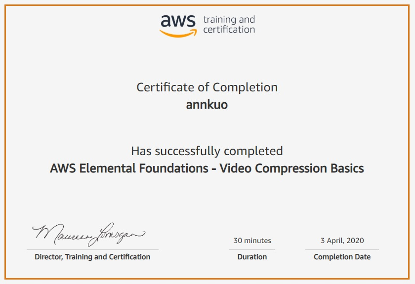
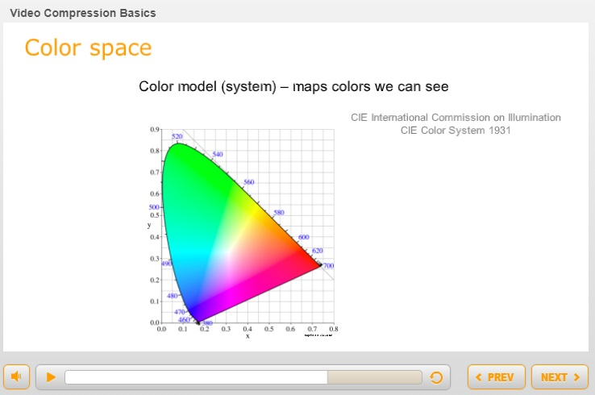
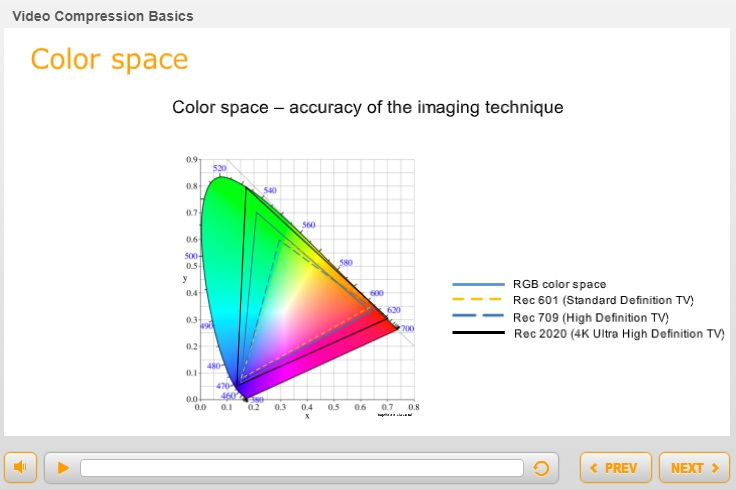
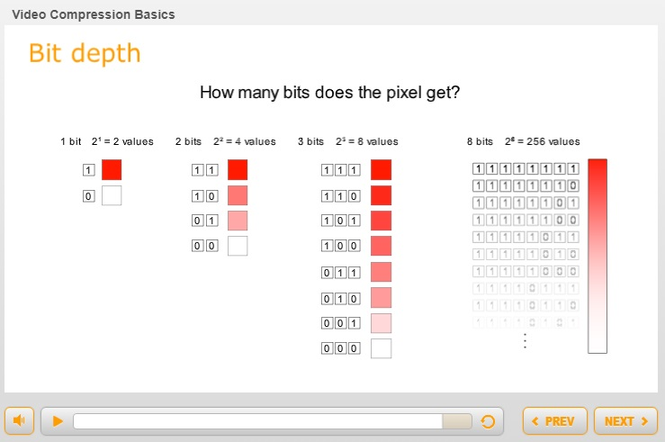
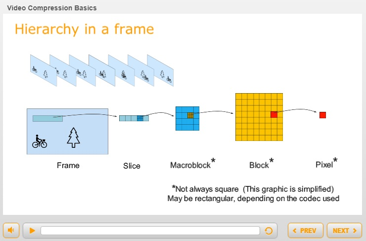

AWS 為了讓大家能更了解他們的服務
提供了許多免費的線上課程
其中包括了許多基礎知識
例如雲端架構、資料庫、物聯網、媒體服務等等
只要到 aws.training 註冊帳號就能上課囉～
這次我上的是轉檔基礎知識 Video Compression Basics
點擊 Launch 就會另開視窗開啟課程
課程結束還能獲得結業證書

但課程大多是英文
我英文超爛的
辛苦翻譯之後就想說留下來 👇
雖然不一定完全正確
前言
影音的發展
1950 年，電視從黑白變成彩色
十年內電視機數量從 600 萬增加到 6000 萬
1990 年，類比電視被數位電視取代
電漿電視和液晶電視的數量在美國增長到 2.2 億
2000 年，數位串流影音透過網路傳遞 (OTT - Over-The-Top)
讓用於觀看影音的設備，如平板電腦、智慧型手機、遊戲機數量激增
如今，優質的影音內容已流傳到數十億台設備
包括劇情長片、連續劇等
而且觀眾準備要支付額外費用來觀看影音
優質影音內容
傳輸影音涉及一連串複雜的技術
當今以不同解析度和壓縮方式來顯示不同的串流
範圍包括廣播電視、教育、金融等行業甚至政府機構
都需要將影音傳送到各種類型的設備
而且小設備和大設備的畫質要看起來一樣好
觀賞體驗
觀眾消費的方式也有所發展
在線性傳統電視以外，消費者可以有以下選項:
- 直播 (Live Event): 體育、音樂會、會議等，並傳送到多個設備
- 點播 (Video-on-Demand): 隨時隨地可用多種設備，來觀看預先錄製的內容
- 時間轉移 (Time shifted viewing): 不受電視台播放的時間限制，可透過重播來觀賞內容
影音越來越大
現今大部分的影音都是用很高的品質拍攝，幾乎與電影勢均力敵
隨著畫質的提高，影音檔案也越來越大
HD (High Definition) 是 SDTV (Standard Definition Television) 的巨大進步
而 4K UHD (Ultra High Definition) 是 HD 的四倍
HDR (High Dynamic Range) 則能提供更豐富的色彩
日本政府也要求 2020 東京奧運要以 8K 播送
影音壓縮
影音壓縮是必要的
因為原始未壓縮的檔案太大
無法有效率的在網路上儲存與傳遞
最好的大小是 5 Mb/sec
關鍵概念
要了解壓縮的原理，我們需要注意以下概念:
解析度 (resolution)、影格速率 (frame rate)、位元速率 (bitrate)色彩空間 (color space)、位元深度 (bit depth)編解碼器 (codec)、容器 (container)
解析度、影格速率、位元速率
解析度 (Resolution)
解析度是畫面能保留的細節程度
通常以寬度和高度的尺寸表示
以像素 (pixel) 為單位
像素是數位影像中最小的元素
一個像素能顯示一種顏色
越多像素就越接近原始影像
所以解析度是畫面清晰度的重要因素
解析度和寬高比 (Aspect Ratio)
解析度也代表寬高比
- SDTV: 720 x 480 /
4:3(1.33:1) - HD: 1920 x 1080 /
16:9(1.78:1) - UHD (4K): 3840 x 2160 /
16:9(1.78:1)
影格速率 (Frame Rate)
影片實際上不是動態的，它是一連串的靜止圖像
因為顯示速度夠快，所以產生動態效果
fps (frames per second) 是顯示圖像的頻率
解析度影響清晰度與細節
而影格速率影響動作的平滑度
影片的影格速率
35 mm 電影膠片通常是 24 fps
影片的格率通常是電壓頻率的倍數
歐洲電壓頻率為 50 Hz
影片格率為 25 fps, 50 fps … 以此類推
美洲電壓頻率為 60 Hz
影片格率為 30 fps, 60 fps … 以此類推
但美洲有兩種不是整數的常用格率
1950 年，當電視加入彩色訊號時，它干擾了黑白訊號
為了解決訊號干擾的問題
格率從 30 改為 29.97 fps，60 改為 59.94 fps
隔行掃描 (Interlaced)
在 CRT 電視上
畫面的呈現方式是一行一行、從上到下、從左到右逐行顯示
在掃描的過程中，重新定位需花費時間
第一行左到右 > 右回到左 > 第二行左到右 > 右回到左 > ….
由於早期螢幕內的化學材質和掃描時間
發現以 30 fps 掃描一個畫面時，所有線條會產生明顯閃爍
解決方式是先顯示奇數行的畫面，再顯示偶數行
這些奇數和偶數行稱為圖場 (fields)
因為它們顯示得很快，以兩倍的影格速率顯示
我們的眼睛就把它們融合在一起
動態看起來更平滑，同時也消除閃爍
隔行掃描 (Interlaced) 在高度尺寸後面以小寫字母 i 顯示
e.g. 480i, 1080i
類比電視標準
類比電視制定了每格掃描線數量和影格速率的標準
歐洲使用 PAL，每格有 625 條掃描線
美洲使用 NTSC，每格有 525 條掃描線
到了 2012 年
類比電視已在大部分地區慢慢被淘汰
逐行掃描 (Progressive)
在 LCD, LED, OLEO 這類平面電視
可以一次顯示所有掃描線，而且不會閃爍
逐行掃描 (Progressive) 在高度尺寸後面以小寫字母 p 顯示
e.g. 720p, 1080p
但 4K 以上的解析度只有逐行掃描，所以不使用 p 表示
位元速率 (Bitrate)
小 b (bit) 是電腦的最小單位
只有兩種狀態: 是或否、0 或 1
Bitrate 通常表示為 bits per second
Mb/s (Mbps) - Megabits per second (百萬位元/每秒)
kb/s (Kbps) - Kilobits per second (千位元/每秒)
Bitrate 越高，則:
- 影像品質越好
- 檔案容量越大
- 所需頻寬 (bandwidth) 越大
色彩空間和位元深度
色彩空間 (Color Space)
在十九世紀
科學家開始研究人眼與光波
他們用色彩模型 (Color model) 來描述人類能看見的顏色
這些色彩模型是色彩空間 (Color space) 的基礎
1931 年，國際照明委員會開發了 CIE 1931 Color Space
此馬蹄形是人可見的所有色彩

色彩空間 (Color Space) 用於測量成像技術的準確性
例如列印、攝影、影音等
後來的 Rec. 601, Rec. 709, Rec. 2020 標準
則規定了顯示器可呈現的色彩
- 1982 年，Rec. 601 代表 SDTV 的色彩空間
- 1990 年，Rec. 709 代表 HD 的色彩空間
- 2012 年，Rec. 2020 代表 4K UHD 的色彩空間
三角形內的區域代表可見的顏色
在使用此顏色空間時，稱為色域 (gamut)
意思是特定空間的完整顏色範圍

注意 SD 到 HD 只有很小的進步
但 HD 到 UHD 則有大幅進展
位元深度 (Bit Depth)
數位圖像由像素 (pixel) 組成
pixel 是 picture element 的混成詞
每個像素儲存特定的顏色
分配給像素的儲存空間稱為位元深度 (Bit Depth)
儲存單位是 bit，它也是電腦儲存的最小單位
空間越大，顏色則顯示越準確
假設有一個像素要顯示為紅色陰影
如果用 1 bit 來描述這個顏色
- 1 bit -> 2 的 1 次方 = 2 種顏色
- 2 bits -> 2 的 2 次方 = 4 種顏色
- 3 bits -> 2 的 3 次方 = 8 種顏色
- 8 bits -> 2 的 8 次方 = 256 種顏色
越多顏色，就能用越平滑的漸層取代階梯的效果

色彩通道 (Color Channel)
一個像素可以儲存三種原色 (紅綠藍) 的色彩通道 (Color Channels)
也就是說一個像素有三個色彩通道
如果三個顏色通道各有 8 bits
紅綠藍就各有 256 種顏色
一個像素就有 1600 萬種不同顏色與強度
256 x 256 x 256 = 16777216 種顏色
這稱為 24 bit color，或說這個影片的位元深度有 24
1600 萬種顏色已適用大部分的終端用戶需求
10 bits 可提供 10 億種顏色 (HDR)
1024 x 1024 x 1024 = 1073741824
12 bits 則可提供 680 億種顏色
4096 x 4096 x 4096 = 68719476736
編解碼器和容器
壓縮 (Compression)
原始檔太大
導致不方便在網路上移動
也不好在家用型設備上觀看
所以必須要壓縮
壓縮過程中會刪除一些顏色資料
但通常我們不會發覺
實際上，我們對亮度還要比顏色更敏感
特別的是
我們對平滑或漸層的細微變化很敏感
但不會去注意複雜部分的細節差異
編解碼器 (Codec)
壓縮視訊和音訊的軟體稱為編解碼器 (Codec)
縮寫來自: compress / decompress 或 encode / decode
這些年來已經創建了數十種編解碼器
而且還持續開發中
目的是為了在減少大小的同時保持影像品質
編解碼器類型
無損編解碼器 (Lossless codecs)
解壓縮後可回復原始資料
通常用於剪輯後製與特效製作
有損編解碼器 (Lossy codecs)
減少了多餘的視覺資料
同時盡可能看起來像原始影像
通常用於發布
你在智慧電視和個人裝置上看的影音
就是使用有損編解碼器進行壓縮
有損編解碼器有不同程度的損失 (loss)
損失最少的是幀內編解碼器 (mezzanine codecs)
它介於無損與高度壓縮之間
編碼標準的演變
有兩個組織在研發與命名編碼標準
- ITU-T Video Coding Experts Group (VCEG)
- ISO-IEC Moving Picture Experts Group (MPWG)
H.264 (ITU 命名) 是過去十年在網路傳輸上，最受歡迎的格式之一
也稱為 MPEG-4 Part 10 Advanced Video Coding (MPEG 命名)
2013 年，H.265 也稱為 HEVC (MPEG-H Pan 2 High Efficiency Video Coding)
是為了提高 4K UHD 的傳遞效率而研發
從主要用於廣播電視的 MPEG-2 到 H.264 和現在的 H.265
新的 codec 都比上一代舊的 codec 減少 50% 的 bandwidth
並且顯著改善畫質又降低 bitrate
容器 (Container)
影音壓縮之後
需要放一些基本數據到容器中
以便讓設備可以儲存、移動、回放
容器就像一個箱子
視訊、音訊、字幕和 metadata 是箱子中的貨物
容器可以透過副檔名來識別
常用的容器有: .mov, .mpg
注意: mpeg 可以是編解碼器，也是容器的名稱
每種容器的容納方式和用途不同
有些只能容納一種類型的編解碼器
有些可以容納多種編解碼器
有些對可容納的編解碼器會有限制
MPEG Transport Stream (TS)
MPEG Transport Stream (.ts) 是最古老且用途最廣泛的容器之一
.ts 容器可以容納多個視訊和音訊的編解碼器
甚至可以容納多個容器，例如其他 .ts
這就是單個串流傳送多個電視節目的方式
想像一下大箱子裡的小箱子
顧名思義，它被設計成運輸容器 (transportation container)
圖像群組
編碼器使用複雜的演算來實現不同類型的壓縮
希望保持畫質且同時減少檔案大小
有一種重要的壓縮類型是 圖像群組 GOP (Group of Pictures)
而單一圖像最常用的類型則是 JPEG (Joint Photographic Experts Group)
JPEG 壓縮方式
JPEG 丟棄人眼不會注意的顏色和複雜細節
因為我們對顏色的敏感度不如亮度
JPEG 稱為幀內編碼 (intra-frame)
幀內代表只參考本身的影格
換句話說，解碼所需的訊息都在這個壓縮檔裡
想像一下
有棵樹在畫面中，然後有個人騎車經過
相機捕捉一系列的靜止圖像
JPEG 壓縮法可以應用在每一個影格上
這稱為 Motion JPEG
它是最早使用的視訊壓縮技術之一
但它沒考慮影格之間重複的資料
像是背景和樹在每個影格裡幾乎沒變
這就是所謂的時間冗餘 (temporal redundancy)
所以後來發明了幀間壓縮技術 (inter-frame)
來跟蹤影格與影格之間的變化和不變化
GOP 壓縮方式
編碼器讀取並儲存一連串的影格 (Sequence)
先對第一格使用幀內編碼，並創建關鍵影格 (I-frame)
再來分析此影格與下一個影格的差異
這些後續影格稱為預測影格 P-frames (Predictive)
不變的像素不會再次壓縮，而是從 I-frame 引用
接著，編碼器會創建另一個 P-frame
在這種情況下，它可能會參考前面的 I-frame 或 P-frame
然後，編碼器可以選擇介於 I 和 P 影格之間的影格
以向前和向後參考影格的方式進行壓縮
這稱為雙向預測影格 B-frame (Bi-directional Predictive)
通常 I-frame 使用最多容量
其次是 P-frame，最後是 B-frame
這些影格需要以正確的順序播放給觀眾
所以每個影格會分配時間戳記 PTS (Presentation Time Stamp)
並且需要按照編碼順序解碼影格
播放順序不代表解壓縮的順序
I-frame 首先被壓縮
再來是 P-frame 被壓縮，最後是 B-frame
為了以正確的順序解碼
每個影格會分配時間戳記 DTS (Decode Time Stamp)
因此解碼器會按照解碼順序 (DTS) 解壓縮影格
再按照呈現順序 (PTS) 播放給觀眾
當 GOP 結束時
編碼器會再創建一個新的 I-frame
並重複壓縮的過程
一個 GOP 是從 I-frame 到下一個 I-frame 的前一個影格
影音串流常用的 GOP 長度可能是
24, 30, 60, 90 或 25, 50, 100 格
大多數編碼器都可調整 GOP 的 B-frame 數量和 GOP 長度
影格的組成結構
影格 (frame) 分為多個片段 (slice)
切片由大區塊 (macroblock) 組成
大區塊由區塊 (block) 組成
區塊由單個像素 (pixel) 組成

請注意
大區塊、區塊、像素不一定是正方形
它們可以是矩形
尺寸範圍取決於編解碼器
CBR 和 VBR
固定位元速率 Constant bitrate (CBR)
會讓整個影音在大部分時間是相同的 Bitrate
之所以出現變化，是因為不同類型的影格有不同的位元速率
而且客戶端的緩衝區 (buffers) 會在播放時讓 bitrate 產生少量變化
變動位元速率 Variable bitrate (VBR)
則會持續變動整個影音的 Bitrate
VBR 將 bits 散佈開來
複雜畫面用多一點 bits
靜態畫面用少一點 bits
通常脫口秀用 CBR
運動比賽或動作片用 VBR
學習重點
上完這堂課，你現在應該能夠:
- 解釋影音技術的發展是如何改變觀眾的消費模式
- 解釋視訊壓縮的關鍵概念，包含:
- 解析度、影格速率、位元速率
- 顏色空間、位元深度
- 壓縮方式，編解碼器、容器